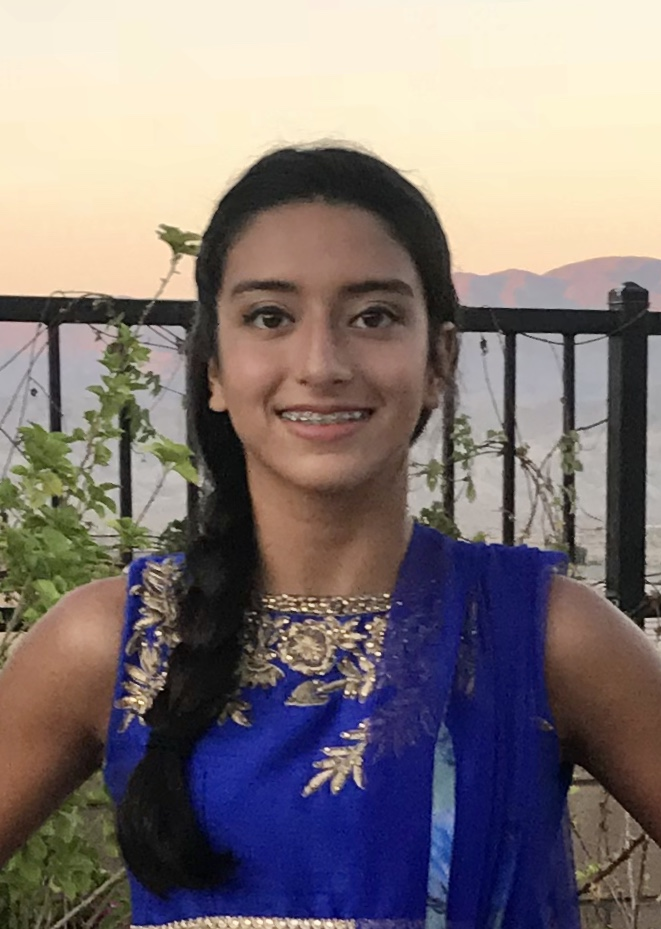

About Me

- Career Goals
In the future, I hope to first become a Software Engineer, and then later on
dive into the business aspect of the industry and become a project manager. My two ultimate goals
are to create a scalable start-up relating to the field of medicine and computer science, and or have an
important leadership position in a company. To achieve this goal, I have selected
rigorious course work along with participating in top tier extracurriculars that relate to computer
science and robotics. After high school, I hope to selected to attend CalTech, UC Berkeley, MIT, or Stanford.
After I get my undergraduate degree, I would receive my MBA so that I could be qualified for business positions at tech companies. My interest in this field started in middle school when I took Advanced Robotics as my elective.
As I become a more experienced coder, I found it fascinating how I could communicate with robots by just writing
programs. Competing in Botball competitions throughout middle school and high school is something I truly enjoy because
it's a creative outlet for me and I enjoy working with my peers to achieve our goal of placing in the international
competition.
- Abilities and Skills
-
I have always had a good work ethic and been both a team player and a leader. Being
a part of the school Botball/Robotics team, I have shown how I am cooperative and
dependable. I value the opinions of my peers because team work, really does make the dream work.
Managing several time-consuming extracurriculars along with competitively swimming for two hours everyday
has taught me to be an efficient student. I have also been a part of Rotary
Speech and Varsity Swimming since ninth grade. Throughout high school, I've maintained a 4.0 GPA and
have taken a combination of 5 APs in my sophomore and freshman year. Due to Covid-19 in my freshman year, unfortunately,
I was not able to compete in my swim or robotics competitions, however, I look forward to them this year!
-
All these experiences have enabled me to grow as an individual and become a better version of myself. From coding and
building robots with my teammates in robotics to improving my public speaking skills, I have learned to be more innovative and
confident. Taking computer science related courses has taught me to be more curious, never shying away from
trying new ways to solving a problem. I am grateful to have these opportunities because they give me the
skill sets needed for the field of study I hope to pursue.
- Conclusion
-
I will continue to work toward my dream of achieving a Software Engineer position at a top tech company, in the near future.
Using my past experiences and opportunities, I will strengthen my skills in order to be a valuable member of
any team. The extracurriculars I have participated in have opened my eyes in an intriguing field that I
would love to enter. Thank you for spending the time to view my website! I would be grateful if you could take a look
at the rest of it and please feel free to reach out to me if need be. My contact information is located under the "Contact Me" tab.